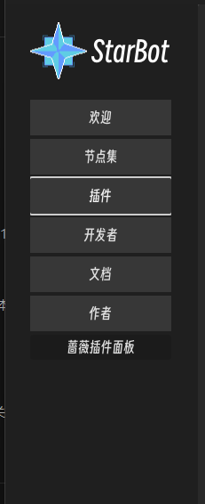
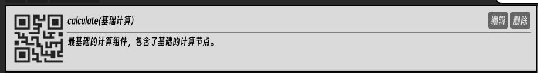
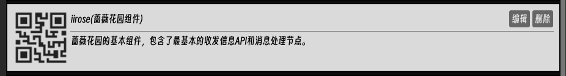
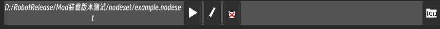
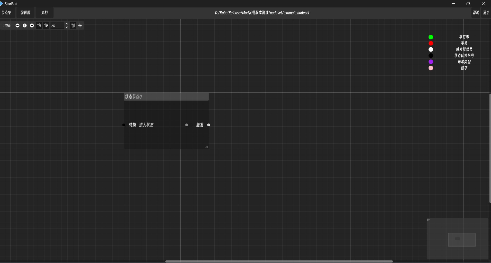
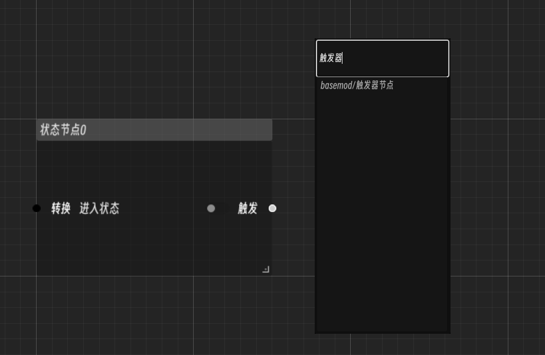
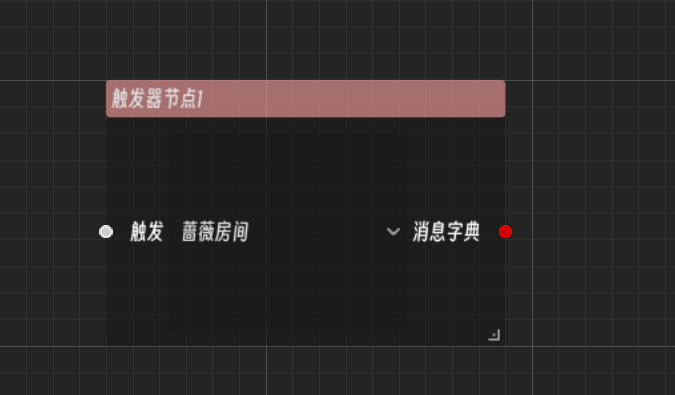
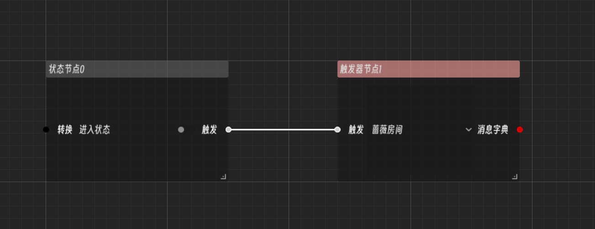
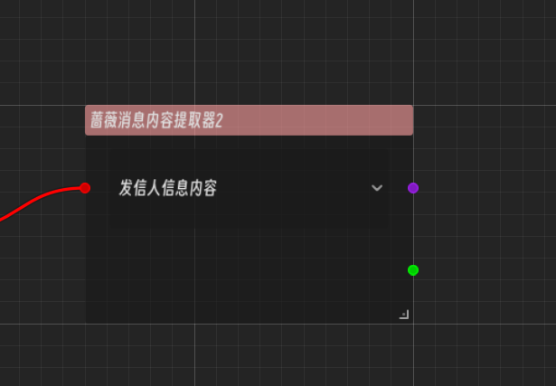

开始编写您的第一个机器人
在本文档中，您将学会如何使用Starbot编写您的第一个聊天机器人（以IIROSE蔷薇花园为例）
获取应用程序
可以从GitHub仓库获取本项目的源代码或分发的可执行文件
本项目基于Godot 4.4版本开发
获取插件

打开插件侧边栏可以查看当前已经装载的插件
请确认已经装载了如下插件(默认分发携带基础插件)
- 基础插件
- 计算节点插件 
- 蔷薇花园API插件 
开始编写可视化逻辑
拥有了以上插件依赖后，我们就可以为蔷薇花园编写一个基础的问答机器人逻辑了
创建节点集文件
打开侧边栏中的节点集栏，我们可以点击创建节点集来进行新的节点逻辑的创建，创建完毕后，我们应该可以看到如下的条目 
进行可视化编辑
点击其中的笔图标我们就可以对这个节点集逻辑进行编辑了，正常情况下你应该可以看到如下界面：

这是我们的可视化编辑器,其中的可浮动窗口我们称之为节点，这也是为什么可视化逻辑集合被称为节点集的原因。
什么是节点？
节点是可视化逻辑的基本构成单元，可以进行处理结果的传递。
每个节点可视化UI左侧的端口名为输入端口，右侧的为输出端口，当左侧端口的所有端口都得到输入数据时，节点内部就会处理这些输入，然后把结果传递到输出端口中，并通过输出端口传递到与之相连的下游节点的输入端口中
节点是可视化逻辑的基本构成单元，可以进行处理结果的传递。
每个节点可视化UI左侧的端口名为输入端口，右侧的为输出端口，当左侧端口的所有端口都得到输入数据时，节点内部就会处理这些输入，然后把结果传递到输出端口中，并通过输出端口传递到与之相连的下游节点的输入端口中
一些快捷键
ctrl+s:快速保存
右键:创建新节点
选中节点后delete键:删除此节点
ctrl+s:快速保存
右键:创建新节点
选中节点后delete键:删除此节点
现在我们可以看到这个名为状态节点的节点，一般情况下，这个状态节点作为我们机器人逻辑的入口，所有消息都会经过当前用户所在的状态节点进行处理
创建触发器节点
现在我们可以右键点击，创建一个新的节点-触发器节点

什么是触发器节点？
触发器实际上是一个筛选特定消息类型的节点，他只筛选特定的消息类型使其通过，若状态节点传递的消息不是当前触发器所选消息类型，则阻止其到达下游节点，由此达到筛选消息类型的功能
触发器实际上是一个筛选特定消息类型的节点，他只筛选特定的消息类型使其通过，若状态节点传递的消息不是当前触发器所选消息类型，则阻止其到达下游节点，由此达到筛选消息类型的功能
这个示例逻辑采用的是蔷薇花园的房间消息，故我们把触发器筛选的消息类型改为-蔷薇房间

然后我们将状态节点与触发器节点进行连接

这样，我们就完成了消息类型的筛选，现在触发器下游就只能收到蔷薇花园内当前所在房间发送的消息了
提取消息内容
蔷薇花园插件提供了一个提取消息内容的节点-蔷薇消息内容提取器 我们可以看到，它的输入端口0为字典，输出端口1为字符串， 我们将其连接到触发器的输出端口上，然后选择其输出的内容，就可以提取出不同的消息内容了。我们将其设置为发信人消息内容。 
这样我们就完成了消息的内容提取。